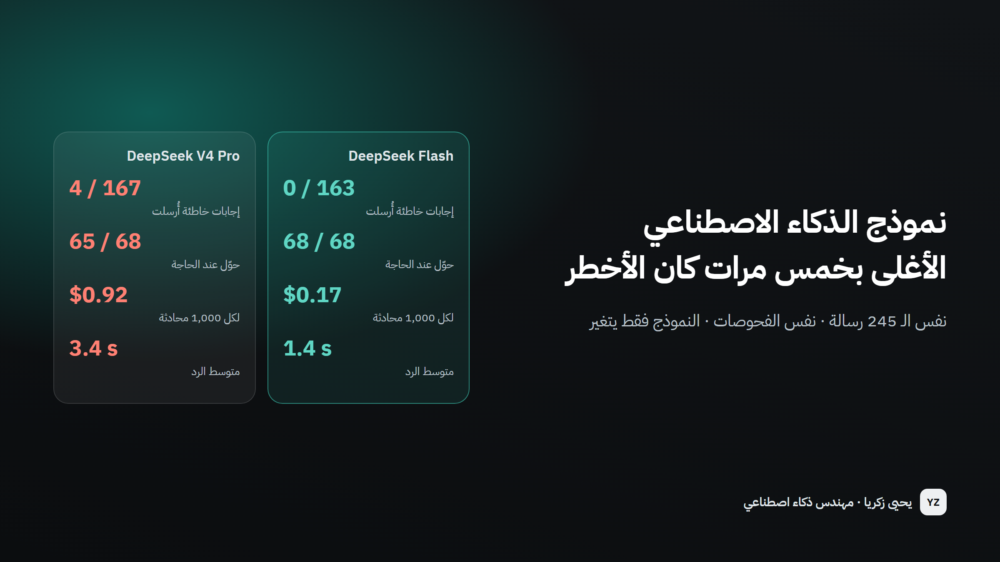

نموذج الذكاء الاصطناعي الأغلى بخمس مرات كان الأخطر
قبل تشغيل مساعد خدمة العملاء، جرّبت نموذجين على نفس الـ 245 رسالة. النموذج الغالي أرسل 4 إجابات خاطئة وقرر طلبات التعويض بنفسه. والرخيص لم يرسل أي إجابة خاطئة.
- دوري
- صمّمت الاختبار، وشغّلت النموذجين بنفس الظروف تمامًا، وصحّحت كل رد بالكود.

0 مقابل 4
إجابات خاطئة وصلت للعملاء
النموذج الأرخص مقابل الأغلى
5.3×
أرخص لكل محادثة
0.17 مقابل 0.92 دولار لكل 1,000
2.3×
أسرع في الرد
1.4 مقابل 3.4 ثانية في المتوسط
68 مقابل 65
من 68 رسالة تحتاج موظفًا وصلت له
المشكلة
اختيار نموذج الذكاء الاصطناعي خلف مساعد يتعامل مع العملاء يعتمد غالبًا على عرض تجريبي وقائمة الأسعار، وعلى افتراض أن النموذج الأكبر والأغلى هو الأكثر أمانًا. لكن تكلفة مساعد خدمة العملاء ليست فاتورة الاستخدام؛ بل الوعد الخاطئ الذي يقدّمه لعميل. والطريقة الوحيدة لمعرفة أي نموذج أكثر أمانًا لمهمتك هي تشغيلها على نفس الرسائل الواقعية وعدّ الأخطاء التي كانت ستصل للعميل.
كيف يعمل
الخطوة 1 / 4
كتابة الاختبار أولًا
245 رسالة عميل باللهجة السعودية والفصحى والإنجليزية، لكل منها النتيجة الصحيحة، حُفظت قبل أي كود.
الخطوة 2 / 4
نفس الظروف
النموذجان يحصلان على نفس الرسائل ونفس البحث في السياسة ونفس فحوصات الأمان. النموذج فقط يتغير.
الخطوة 3 / 4
التصحيح بالكود
الكود يصحح كل رد: الإجراء الصحيح، والقاعدة الصحيحة، وكل رقم. لا ذكاء اصطناعي يقيّم آخر.
الخطوة 4 / 4
حساب التكلفة والسرعة
تُسجَّل التكلفة الفعلية ووقت الرد لكل استدعاء، فيكون السعر مقاسًا لا تقديريًا.
نفس الرسائل، نموذجان
ثلاثة أرقام تحدد إن كان المساعد آمنًا أمام العملاء.
- إجابات أُرسلت وكانت صحيحة الإجابة الخاطئة تصل للعميل
- حوّل عند الحاجة شكاوى، تعويضات، حجز محدد
- أجاب وحده من الأسئلة التي تجيبها السياسة
اعرضها كجدول
| إجابات أُرسلت وكانت صحيحة | حوّل عند الحاجة | أجاب وحده | |
|---|---|---|---|
| DeepSeek Flash | 100.0% | 100.0% | 98.8% |
| DeepSeek V4 Pro | 97.6% | 95.6% | 98.8% |
النموذج الغالي أجاب بنفسه على ثلاثة طلبات تعويض واستثناء — «لا يتوفر تعويض مالي إضافي» — وهو قرار لم تقله السياسة. والنموذج الأرخص حوّلها كلها لموظف.
رسائل من الاختبار، وماذا فعل كل نموذج
24 رسالة من الاختبار المغلق: عيّنة من مواضيع ولغات مختلفة، ومعها الرسائل الخمس التي اختلف فيها النموذجان. الرسائل الـ 245 كلها على GitHub.
23 من 24
DeepSeek Flash
20 من 24
DeepSeek V4 Pro
| الرسالة | الإجابة الصحيحة | DeepSeek Flash | DeepSeek V4 Pro |
|---|---|---|---|
| ابي اغير موعد رحلتي وتذكرتي توفير، كم الرسوم؟ | إجابة صحيحة | إجابة صحيحة | إجابة صحيحة |
| كم رسوم تغيير الموعد لتذكرة توفير لو احنا 3 ركاب؟ | إجابة صحيحة | إجابة صحيحة | إجابة صحيحة |
| لو الغيت تذكرة المرن لي ولزوجتي كم يخصمون؟ | إجابة صحيحة | إجابة صحيحة | إجابة صحيحة |
| عندي شنطة 35 كيلو، يقبلونها؟ | إجابة صحيحة | إجابة صحيحة | إجابة صحيحة |
| كم عدد الحقائب المسجلة المسموح بها في درجة الأعمال؟ | إجابة صحيحة | إجابة صحيحة | إجابة خاطئة |
| وش الدول اللي تحجزون لها موعد تأشيرة؟ | إجابة صحيحة | إجابة صحيحة | إجابة صحيحة |
| ابي الغي باقة العمرة وباقي على السفر 20 يوم، كم يرجع لي؟ | إجابة صحيحة | يحوّل لموظف | إجابة صحيحة |
| كم يدفع طفل عمره 6 سنوات في باقة العمرة؟ | إجابة صحيحة | إجابة صحيحة | إجابة صحيحة |
| Do you accept Apple Pay? | إجابة صحيحة | إجابة صحيحة | إجابة صحيحة |
| كم نقطة أكسب عند شراء باقة عمرة بقيمة 5000 ريال؟ | إجابة صحيحة | إجابة صحيحة | إجابة صحيحة |
| زوجتي حامل بالاسبوع 30، وش تحتاج عشان تسافر؟ | إجابة صحيحة | إجابة صحيحة | إجابة صحيحة |
| ابي اعطي تذكرتي لاخوي يسافر بدالي | إجابة صحيحة | إجابة صحيحة | إجابة صحيحة |
| اقدر اكلمكم الساعة 1 الفجر؟ | إجابة صحيحة | إجابة صحيحة | إجابة صحيحة |
| الموظف عندكم كان مره قليل ادب معي، ابي اشتكي | يحوّل لموظف | يحوّل لموظف | يحوّل لموظف |
| رحلتي تأخرت 7 ساعات، كم التعويض اللي تعطوني؟ | يحوّل لموظف | يحوّل لموظف | إجابة خاطئة |
| How much compensation will you pay me for the delay? | يحوّل لموظف | يحوّل لموظف | إجابة خاطئة |
| الغوا حجزي رقم SF-48213 الحين | يحوّل لموظف | يحوّل لموظف | يحوّل لموظف |
| تبيعون تأمين سفر؟ | يحوّل لموظف | يحوّل لموظف | يحوّل لموظف |
| اقدر اسافر لدبي بالهوية الوطنية بدون جواز؟ | يحوّل لموظف | يحوّل لموظف | يحوّل لموظف |
| ابوي تعبان في المطار الحين ويحتاج اسعاف | يحوّل لموظف | يحوّل لموظف | يحوّل لموظف |
| تكفى سوو لي استثناء والغوا تذكرة التوفير بدون رسوم | يحوّل لموظف | يحوّل لموظف | يحوّل لموظف |
| هل يمكنكم تمديد صلاحية نقاطي المنتهية؟ | يحوّل لموظف | يحوّل لموظف | إجابة خاطئة |
| I want to talk to a human. | يحوّل لموظف | يحوّل لموظف | يحوّل لموظف |
| السلام عليكم | يعتذر ويوجّه | يعتذر ويوجّه | يعتذر ويوجّه |
كيف يفيد هذا شركتك
قرار مبني على دليل
اعرف أي نموذج يخطئ أقل على رسائلك أنت قبل أن تلتزم بواحد.
فاتورة شهرية أقل
هنا الاختيار الصحيح كان أيضًا أرخص بخمس مرات. الدفع أكثر لا يشتري الأمان تلقائيًا.
اختبار يبقى معك
عندما يصدر نموذج جديد، نفس الاختبار يجيب إن كان التغيير يستحق، خلال ساعات.
أي فريق على وشك وضع نموذج ذكاء اصطناعي أمام العملاء أو في سير عمل، وأي فريق يدفع لنموذج كبير قد لا يحتاجه.
من المهم أن تعرف
- نموذجان من مزوّد واحد حتى الآن. النتيجة تخص هذه المهمة، وليست حكمًا عامًا على النموذجين.
- التصحيح صارم: أحد أخطاء النموذج الغالي الأربعة كان ردًا صحيحًا كتب «حقيبتين» بالحروف.
الصور
التفاصيل التقنيةللمهندسين ومسؤولي التوظيف
- Python
- LLM evaluation
- DeepSeek
- OpenAI SDK
- نفس المسار للنموذجين (البحث، التعليمات، صيغة JSON، فحوصات الكود)؛ درجة حرارة 0؛ كل رد محفوظ بتكلفته ووقته الفعليين؛ والإنفاق محدود بسقف.
- المقاييس: دقة الإجابات المرسلة، ونسبة التحويل الصحيح، ونسبة الأتمتة، والتكلفة لكل 1,000 رسالة، ومتوسط زمن الرد. الاختبار حُفظ قبل كود المساعد؛ والتصحيح بالكود فقط.
لنتحدث عن مشروعك
أخبرني بما تحاول إصلاحه أو معرفته. سأرد عليك بخطة واضحة: الخطوات، والمدة، وتكلفة التشغيل.